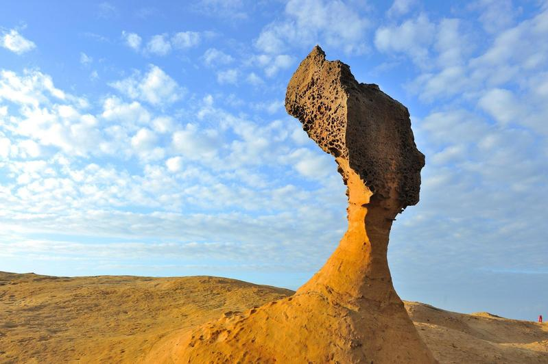

景點介紹
女王頭是野柳地質公園的地標，本身為蕈狀岩，民國51~52年（西元1962~1963年）間因頂部結核上的節理斷裂，讓岩石形狀改變，遠觀時外形雍容大方，頸部修長、臉部線條幽美，貌似英國伊莉莎白女王頭像，因而得名。 經過數十多年自然風化影響，女王頭脖子越來越細，目前已委託學術研究單位進行補強計畫，以確保女王頭地標長久存在。
太魯閣國家公園座落於花蓮、臺中及南投三縣市，是臺灣第四座成立的國家公園，前身為日治時期成立之次高太魯閣國立公園（1937-1945）。 其範圍以立霧溪峽谷、東西橫貫公路沿線及其外圍山區為主，包括合歡群峰、奇萊連峰、南湖中央尖山連峰、清水斷崖、立霧溪流域及三棧溪流域等，全區面積九萬二千公頃。

西元1881年興建的鵝鑾鼻燈塔，位於屏東縣鵝鑾鼻岬角，塔身為白色鐵造圓塔，是臺灣本島最南的燈塔。 燈樓面向西南方，背山臨海，並構築成砲壘形式，圍牆有射擊的槍眼，四周並築壕溝，使得鵝鑾鼻燈塔成為全國獨一無二的武裝燈塔。